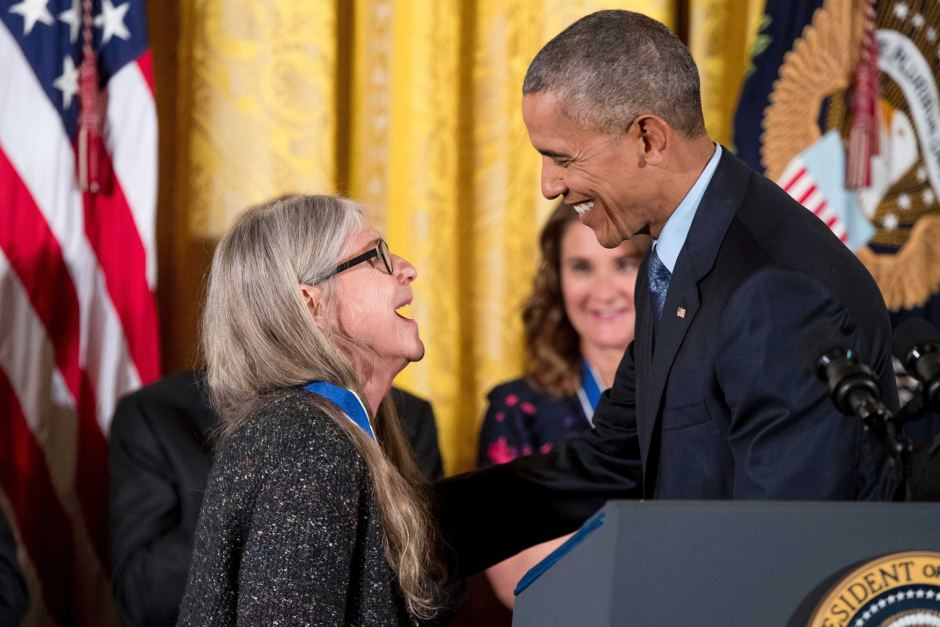
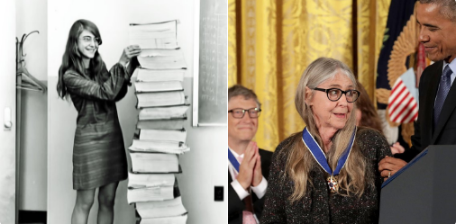
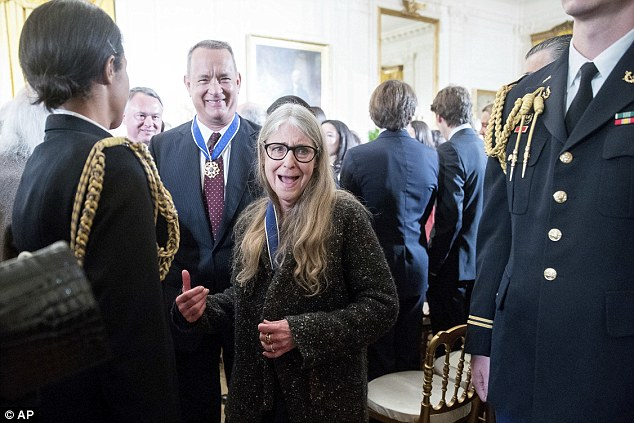

Apollo software engineer Margaret Hamilton receives Presidential Medal of Freedom
President Obama awarded his last Presidential Medal of Freedom — the highest US honor given to a civilian — in a packed ceremony on Tuesday, according to The New York Times. Margaret Hamilton, the woman behind the onboard flight software for NASA Apollo lunar modules and command modules, was among the 21 recipients.
HAMILTON IS THE BRAINS BEHIND APOLLO’S ONBOARD SOFTWARE
Hamilton, who invented the term “software engineer,” began her career as a computer programmer at MIT in the 1960s. In August 1961, NASA issued a contract to MIT to design the spacecraft’s guidance and navigational system. Hamilton presided over the in-flight software group, which included overseeing the alarm system that would give a warning when the computer was overloaded, but at the same time allowed it to switch its focus to critical tasks and stop doing non-critical tasks.
This alarm system proved to be crucial in the moments leading up to Buzz Aldrin and Neil Armstrong’s Moon landing when it rang due to a faulty radar. But it allowed Aldrin and Armstrong to continue with the landing as the computer informed the crew that it was shedding its less-important functions to focus on steering the engine during the spacecraft’s descent.
During the award ceremony, Obama said Hamilton represents “that generation of unsung women who helped send humankind into space.” Her prominence as a woman in technology came into focus at the end of 2015, when an image of her was tweeted in reference to IBM’s awkward and much criticized #HackAHairDryer campaign.
Hamilton was honored by NASA in 2003 for her work and innovation in Apollo software development. She is known for having a rigorous testing approach to her work. According to Wired, Hamilton remembered leaving a party late a night to fix code she realized was flawed. She told the magazine, “I was always imagining headlines in the newspapers, and they would point back to how it happened, and it would point back to me.”